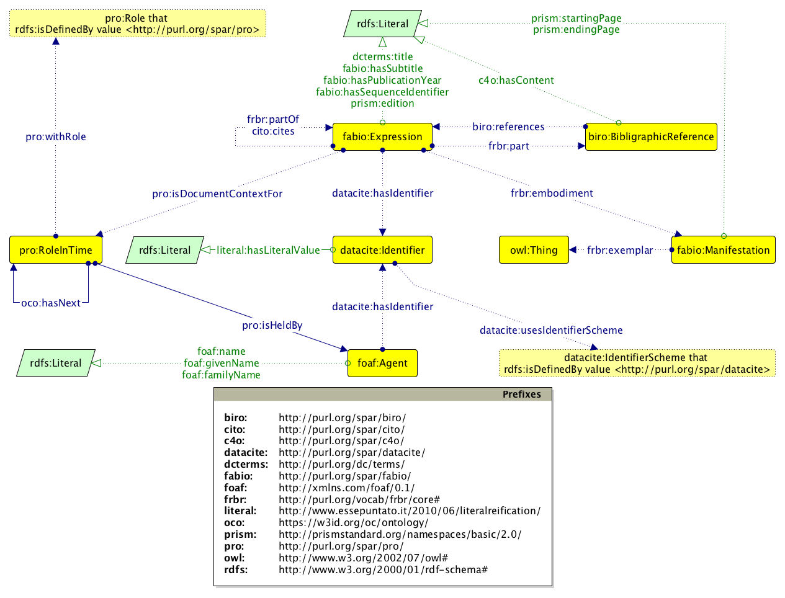

In this paper we introduce the OpenCitations Corpus, an open repository of scholarly citation data available in RDF and published according to the FAIR principles.
License: Creative Commons Attribution 4.0 International License.
Notes: submitted to GARR Conference 2017.
This version: https://w3id.org/people/essepuntato/papers/oc-garr2017/2017-09-28.html
Last version: https://w3id.org/people/essepuntato/papers/oc-garr2017.html
Sharing scholarly data to foster their reuse is one of the main goals of the current practices in Data Science and, more generally, in scholarly communication. While some parties are trying to boycott the unscrupulous reuse of experimental data – for instance see the research parasites
issue that generated a strong response from the scientific community –, others have recently proposed common practices and guidelines to support a better sharing and reuse of scholarly data in order to support secondary data analysis.
In particular, a FORCE11 (https://force11.org) working group has recently proposed the FAIR Data Principles . The acronym FAIR stands for Findable, Accessible, Interoperable, and Reusable, which are the main leading principles that, if applied, would facilitate the discovery, access, integration, and analysis of scholarly knowledge by humans and machines.
Citation data are among the scholarly data to which the application of FAIR principles would benefit the whole scholarly community, particularly since analysis of citation events is one of the main ways of finding key publications on a particular topic. Citation data are also important for the assessment of the quality of research by means of metrics and indicators calculated from citation databases. However, the cruel reality that the most authoritative citation indexes, i.e. Scopus (https://www.scopus.com) and Web of Science (http://webofscience.com), do not follow the FAIR principles, primarily because they can only be accessed by paying significant subscription fees. In the current age, in which Open Access is considered a necessary practice in research, citation data now needs to be recognized as a part of the Commons […] and placed in an open repository
.
The Initiative for Open Citations (I4OC, https://i4oc.org) has been recently launched to promote the aforementioned idea. I4OC is a collaboration between scholarly publishers, researchers, and other interested parties to promote the unrestricted availability of scholarly citation data, initially by encouraging scholarly publishers to make open the article reference lists they already deposit to Crossref (https://crossref.org). Among the I4OC founders, one specific organization, OpenCitations (http://opencitations.net), has the further objective of employing Semantic Web technologies to create an open repository of the scholarly citation data published in RDF according to the FAIR principles.
OpenCitations formally started in 2010 as a one-year Jisc-funded Open Citations Project at the University of Oxford. The main goal of the project was the creation of a database of open citation data, the OpenCitations Corpus (OCC), made available in RDF (https://www.w3.org/TR/rdf11-concepts/). At the end of 2015, a formal collaboration between the University of Oxford and the University of Bologna was initiated to build from that initial Oxford prototype, setting up a new instantiation of the OCC based on a revised metadata schema , and employing several new technologies to automate the daily ingestion of fresh citation metadata from authoritative sources . The OCC is now the largest truly open collection of RDF-based citation data available on the Web, and includes more than 10.5 million citation links to around 5.7 million cited resources (as of 28 September 2017). In the following subsections we describe the tools and technologies used by the OCC to comply with the FAIR principles.
The OCC uses https://w3id.org – a service run by the W3C Permanent Identifier Community Group to provide a secure, permanent URL re-direction service for Web applications – as the root URL for assigning persistent identifiers to all its entities. For example, https://w3id.org/oc/corpus/br/7295288 identifies the paper referenced in within the OCC. All the citation data are described according a specific metadata model that is based on SPAR Ontologies (http://www.sparontologies.net) and other standard vocabularies. All the data within the OCC are queryable by means of the OpenCitations SPARQL endpoint (https://w3id.org/oc/sparql), and dumps of the entire database are uploaded monthly to Figshare (https://figshare.com). In addition, all the original sources from which the information within the OCC has been obtained are linked by means of provenance information according to PROV-O (https://www.w3.org/TR/prov-o/).
All the data in the OCC can additionally be retrieved by using their unique identifiers – which are URLs – via HTTP. The resource metadata are made available either in human-readable HTML or in a variety of machine-readable forms (RDF/XML, Turtle or JSON-LD) via content negotiation. All the citation data within the OCC can be accessed independently from the current Web existence (or absence) of the original publications from where they have been obtained.
The data within the OCC are described by means of RDF, which is the main data model for representing information in machine-readable form on the Web, and this enables qualified links from/to any entity included in the Corpus. The data are modelled in RDF according to a set of ontologies, grouped together and formalized in the OpenCitations Ontology (https://w3id.org/oc/ontology), as summarised in the diagram in . These ontologies themselves follow the FAIR principles.
The entities described within the OCC includes citing and cited bibliographic resources (conference papers, journal articles, etc.) and their containers (academic proceedings, journals, etc.), the formats in which they have been embodied (digital vs. print), the names and roles of relevant bibliographic agents related to these resources (author, publisher, etc.), the literal textual content of each reference in the reference list of each citing bibliographic resource, and all the identifiers (DOI, ORCID, etc.) employed to identify these bibliographic resources and the agents involved. Provenance information is associated with all the entities in the OCC via PROV-O, and changes in the data can be tracked by means of SPARQL UPDATE queries . All the data included in the OCC are available under a Creative Commons public domain dedication (CC0, https://creativecommons.org/publicdomain/zero/1.0/legalcode).

In this contribution we have introduced the tools and technologies that ensure that the OpenCitations Corpus – an RDF database of open scholarly citation data – is fully compliant with the FAIR Data Principles. As an immediate future development of the project, made possible by means of recent funding from the Alfred P. Sloan Foundation (https://sloan.org), we will extend the current infrastructure and the rate of data ingest. Our immediate goal is to increment the daily ingestion rate of citation data from ~500,000 citations per month to ~500,000 citations per day.
Longo D. L., Drazen J. M. (2016) Data sharing. New England Journal of Medicine, 374: 276–277. DOI: https://doi.org/10.1056/NEJMe1516564
Peroni S., Dutton A., Gray T., Shotton D. (2015). Setting our bibliographic references free: towards open citation data. Journal of Documentation, 71 (2): 253–277. DOI: https://doi.org/10.1108/JD-12-2013-0166
Peroni S., Shotton D. (2016). Metadata for the OpenCitations Corpus. Figshare. DOI: https://doi.org/10.6084/m9.figshare.3443876
Peroni S., Shotton D., Vitali F. (2016). A document-inspired way for tracking changes of RDF data. In Proc. of Drift-a-LOD 2016: 26–33 http://ceur-ws.org/Vol-1799/Drift-a-LOD2016_paper_4.pdf
Peroni S., Shotton D., Vitali F. (2017). One year of the OpenCitations Corpus: Releasing RDF-based scholarly citation data into the Public Domain. In Proc. of ISWC 2017. https://w3id.org/people/essepuntato/papers/oc-iswc2017.html
Shotton D. (2013). Open citations. Nature, 502 (7471): 295–297. DOI: https://doi.org/10.1038/502295a
Wilkinson M. D., Dumontier M., Aalbersberg I. J., et al. (2016). The FAIR Guiding Principles for scientific data management and stewardship. Scientific Data, 3: 160018. DOI: https://doi.org/10.1038/sdata.2016.18